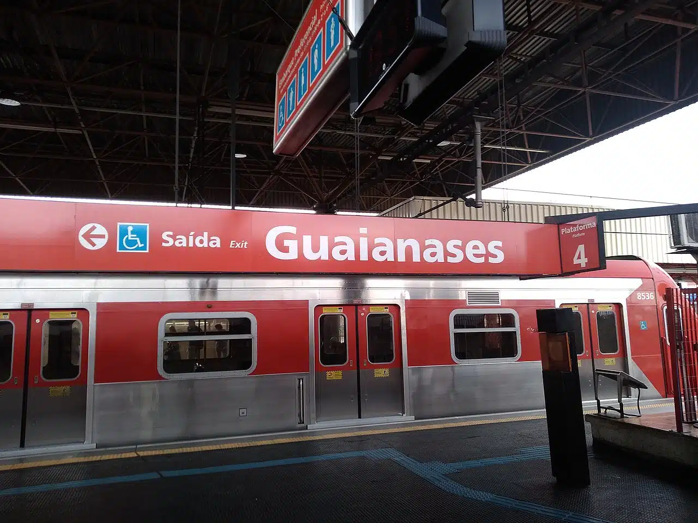

Estação Brás da CPTM recebe mutirão de atendimento para mulheres na quarta-feira (09)
Em referência à Campanha Outubro Rosa, a ação é uma parceria da Secretaria dos Transportes Metropolitanos e a Defensoria Pública, que acontece das 10h às 15h
Quem passar pela Estação Brás da CPTM, nesta quarta-feira (09/10), poderá aproveitar uma ação dedicada à conscientização sobre o câncer de mama, em alusão à Campanha do Outubro Rosa.
A estação terá um mutirão com atendimento jurídico gratuito para mulheres, que acontece das 10h às 15h. Durante a atividade, o público interessado será atendido na van da Defensoria Pública, garantindo conforto e acessibilidade para todas as interessadas.
Estação Palmeiras-Barra Funda da CPTM recebe apresentação de dança com cadeirantes neste sábado (05)

A performance acontece em três horários: 10h, 10h30 e 11h. Após ao show, haverá também uma oficina de dança de salão, à 11h30
Um espetáculo com artistas cadeirantes vai ocupar o espaço na Estação Palmeiras-Barra Funda da CPTM no próximo sábado (05/10). Intitulada "Por onde passam as rodas", a apresentação traz a performance de três dançarinos cadeirantes e três artistas não cadeirantes que farão coreografias mescladas com cenas de teatro.
O evento, parceria com a ONG Solidariedança, faz parte de um projeto cultural e social de intervenções nos espaços livres das estações de trem, metrô e terminais de ônibus com o objetivo de promover a inclusão, a acessibilidade e a mobilidade em todos os aspectos.
CPTM inabilita empresa para obras na estação Guaianases

A Estação Guaianases, da Linha 11-Coral, deve receber em breve um bicicletário e escadas rolantes. A Companhia Paulista de Trens Metropolitanos (CPTM) abriu uma licitação para a execução dessas obras na movimentada estação, que atende moradores da zona leste da capital.
Uma das licitantes, a Construmax Construções e Empreendimentos Ltda – EPP, foi inabilitada.